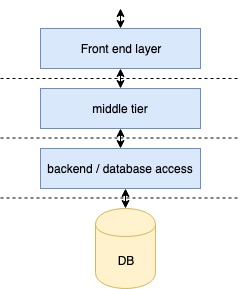

Building Microservices
Note: These opinion are solely mine and not Amazon’s
Monolithic service vs Micro-service
A service is a web server which takes in request and provides a response. The responsibilities of the service can be divided into 3 tiers.
- The front end – responsible for rendering the page
- The middle tier – the service responsible for business logic
- The backend – usually responsible to interact with the database or it can be the database itself.

A monolithic service can be viewed as a wholesome service responsible for all the tiers. In a micro-service architecture the tier responsibilities is divided among different services which communicates over the network to gets the final response to the user.
So why move to micro-service architecture? In a large organisation like Amazon it can be very difficult to maintain a monolithic service. Hundreds of developers developing on a single service is a recipe for disaster. A micro-service architecture segregates the responsibilities in its own service and assists ease of development. It is also easier to maintain as the changes in service can be deployed independently.
Building a production-ready micro-service
If you are building a service to make a profit, building a production ready micro-service would come with more than sending a request and getting the desired response. To have a great customer experience the service should respond within acceptable time limits and should be available at all times.
1. Building the Service
Interface design
Ideally the service owner defines the contract and control the endpoint, timeout, retry logic etc for the service. An interface can be defined as a contract between client and the service which directly influences the response from the service. The service owner should provide the documentation explaining each of the parameters or APIs defined in the interface.
Timeouts and Retries
As a service owner owning the interface, you will need to answer the following questions.
How do we define values for timeout? Timeout value can directly affect the availability of your service. A host in your production fleet has limited number of open connections. If your service is taking thousands of transactions per seconds, you need to make sure you are freeing up the open connections as soon as possible. High timeout value means the connection is occupied for a longer time, which is dangerous because eventually you’ll be exhausting all your connections and will take down your fleet. On the other hand a low timeout value means you are returning error response to a greater percentage of traffic thus decreasing the availability.
Selecting appropriate timeout value for your service needs experimentation and periodic revaluation.
How do we know how many retries we want to do? Before considering retries, check which requests do you want to send again to the server. Retrying invalidated request would unnecessarily increase load to the server. But retries can increase the availability incase the first request timed out and sending it again can yield a response.
Before fixing the number of times you want to retry, consider
- The number of retries can amplify the existing issue. If the service is down due to an issue (say the database service or a dependency is down due to heavy load), you could amplify the issue by sending more traffic to the service.
- If you have a stack of microservices, say
ServiceA -> ServiceB -> ServiceC, check the retry value of ServiceA before deciding retry value of ServiceB. Having a cascade of retries can exponentially increase the traffic to ServiceC incase ServiceC is down.
Priming
Priming addresses the cold start problem where the service takes longer to respond for the first few requests. Priming sends dummy requests to warm up the service and/or service cache to reduce the impact of latency increase on the customer. The priming can be more intelligent if you know what the hot transactions are, for your service and you can warmup the cache accordingly.
Health check
As the title suggests, health checks are used by load balancers to check the health of the service. The load balancer will ping the service periodically and waits for its response. If one of the host does not respond, load balancer can decide to replace the host with the new one. Other health checks vary according to the use case of the service.
Protecting one client from other (throttling)
Disaster happens! When your service is under anvil by an unexpected increase in traffic from one of your clients, a natural reaction is to block a percentage of traffic from the malicious client. This is called throttling and it protects other clients from unexpected response from your service. There are different types of throttling you might want to research about.
Logging
Logging helps you determine what is happening in runtime. It helps you to handle unexpected responses from database, fix code bugs and maintain the sanity of service. But logging comes with an additional cost. Writing logs to disk is expensive and can quickly fill up your disk space. The generated logs needs to be rotated and sent to a service which maintains it and can be retrieved later.
Testing
Testing is not new, and every developer knows the importance of testing. Types of testing are:
- Functional testing: Checks if the service returns an expected response.
- Unit testing: Can be viewed as an atom of testing. It is the smallest piece of code (usually a function) that can be tested for different inputs.
- A/B testing: A/B testing is the statistical analysis of how the customer behaves when shown an experiment A or experiment B. Based on the analysis report, either A or B is chosen.
- Stress testing: Helps to understand how your service behaves under stress. More about this later…
2. Alarms, Metrics and Monitoring
To keep your service live 24x7 you need to monitor your service. Each web service emits metrics which varies according to the business and with the type of service. We set thresholds on these metrics to define what is not-normal in the monitoring systems which alarms if thresholds are breached.
Host level metrics
These metrics are related to the hosts in which the service is deployed. Some examples are CPU, network bandwidth, number of threads spawned etc. Host performance can directly affect the performance of your service. For example, increase in CPU limits the ability of the service to serve more traffic. The oncall engineer might consider scaling horizontally (adding more hosts) or vertically (adding hosts with more powerful CPU) depending on the whether your service is compute intensive or not. Capacity planning – which we will discuss in later sections – will help to avoid situations where immediate scaling is needed. In a CI/CD framework, teams choose to rollback the deployment if there is a regression in CPU before and after deployment. The rollbacked changed can be fixed later.
Service level metrics
The service emits logs with errors, faults and time it took to serve a request (latency). The team defines what is the acceptable amount of faults in a time interval and what is the acceptable average latency of the service. If the threshold is breached, alarm goes off and pages the oncall. Rigorous testing will help prevent threshold breached which we will discuss in following sections.
3. Security
Security is a very big topic and I personally haven’t been able to work on this a lot. Although service owners need to ensure that they encrypt data over the network, encrypt data while storing in database and regulate access to its data; security should be a company wide effort. Breach in security can affect the company’s reputation.
4. Cache
Usually an off-the-shelf LRU cache solution with 2 level of cache – L1 and L2 cache – works for most services. An L1 cache is in host cache with 1GB memory and L2 cache is out of the host cache which is hosted in a separate fleet which is couple of hundred GB. The capacity of cache varies the amount of data you retrieve from other services or your database and then applying 80-20 rule, i.e. 80% of the traffic is generated by 20% of the users.
5. Capacity planning
The service is ready and all the testing is done. It is time to launch your service. You use a load generator script and replay dummy traffic while increasing the transactions per second until your service breaks. Based on the observations from stress tests you can answer some of the questions below:
- How many hosts should you order?
- Is your service compute heavy, network heavy or both?
- What is the type of host you should order?
- What are the top issues with your service?
- How does your service behave under stress?
- How does your service behaves with / without cache? are few of them…
That’s it :) Let me know if you have any comments or suggestions.